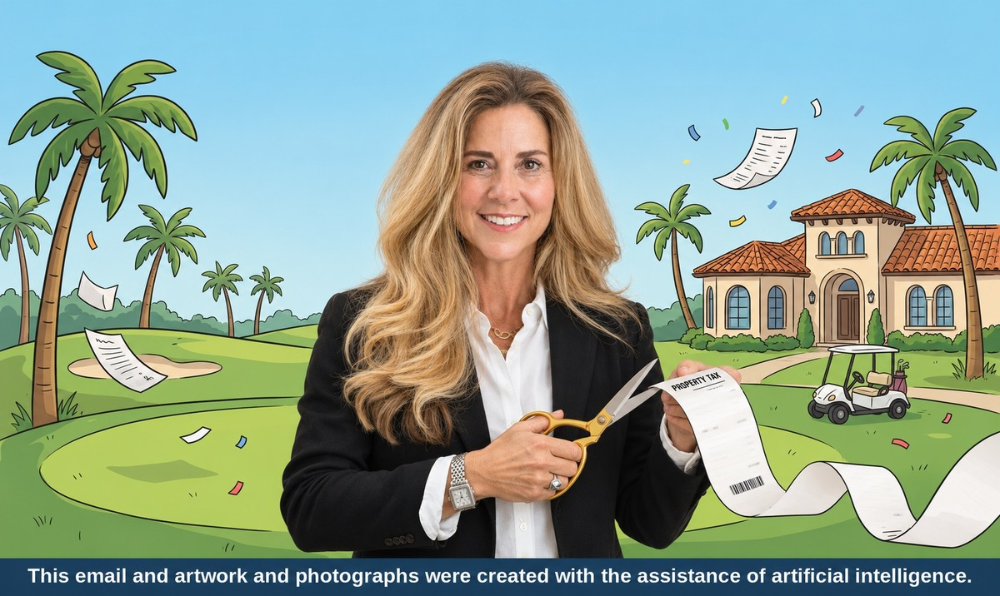

Florida voters backed Amendment 3 on Tuesday. The state’s unofficial tally put support at about 62%, above the 60% needed for passage. For homeowners in Seven Bridges, the gated community in west Delray Beach, the change matters in different ways depending on whether the home is your primary residence or a seasonal property. If you’re planning a move from out of state, there’s also a date worth circling.
In 2026, the standard homestead exemption shelters up to $51,411 of assessed value from non-school property taxes. For eligible homeowners, that amount rises to $150,000 in 2027 and $250,000 in 2028, with adjustments for positive inflation beginning in 2029. The school-tax exemption remains $25,000. Eligible owners who already have homestead generally receive the increase automatically, with the first change appearing on their August 2027 notice of proposed property taxes.
Save Our Homes still limits annual assessed-value increases on a qualifying homestead to the lower of 3% or the applicable inflation rate. Eligible homeowners moving from one Florida homestead to another can still apply to transfer part of that benefit through portability.
Say you bought a Seven Bridges home in 2023 for $3 million and its first homesteaded assessment was $3 million in 2024. Applying Florida’s published Save Our Homes caps of 2.9% in 2025 and 2.7% in 2026 brings the modeled assessed value to $3,170,349. From there, I assumed 3% annual assessment growth.
Seven Bridges has a Delray Beach mailing address and is in unincorporated Palm Beach County. For this illustration, I used 2026 rates for a standard unincorporated taxing district of 9.9322 mills for non-school taxes and 6.2870 mills for school taxes, held constant through 2028. Your parcel’s rate may differ.
| Tax year | Modeled assessed value | Estimated tax under prior rules | Estimated tax with Amendment 3 | Estimated savings |
|---|---|---|---|---|
| 2026 | $3,170,349 | $50,753 | — | — |
| 2027 | $3,265,459 | $52,289 | $51,316 | $973 |
| 2028 | $3,363,423 | $53,871 | $51,912 | $1,959 |
Between 2026 and 2028, the home’s assessed value rises about 6.1%, while its estimated property tax rises about 2.3%. The bill still goes up, but it’s about $1,959 lower in 2028 than it would have been under the prior rules. The 6.1% measures growth in the modeled tax assessment. Market value is a separate question.
The amendment looks at whether you maintained permanent Florida residency as of December 31, 2026. If you meet that cutoff and later buy in Seven Bridges, you may qualify for the larger exemption when you establish homestead on that property. If you establish Florida residency after the cutoff, the amendment generally provides a $50,000 non-school exemption for your first four years of receiving homestead, with eligibility for the larger exemption beginning in year five. The residency provision is subject to federal constitutional requirements and may be affected by future legislation or court decisions.
At the rate used in our example, the difference between the $50,000 and $250,000 exemptions is about $1,986 in 2028. If you’re already planning a move, distinguish the state residency cutoff from the homestead deadlines for the home itself. For 2027 homestead, Palm Beach County generally requires you to qualify as of January 1, 2027 and apply by March 1, 2027. Confirm how those dates apply to your move with the Property Appraiser’s Office or your tax adviser.
For qualifying non-homestead property, the annual cap on assessment increases drops from 10% to 5% for non-school taxes. That can slow how quickly the taxable assessment rises during years of strong price growth. Your actual bill can still change with tax rates, school levies and other charges. If you’re buying, budget from a buyer-side estimate, since a sale can reset the assessment.
My view is that Amendment 3 is most useful when you’re comparing the cost of owning two homes. Roughly $2,000 a year can matter to a household weighing taxes, insurance and HOA dues. The residency cutoff may also influence the timing of moves that are already in the works. For pricing a home in Seven Bridges, I’d still start with recent comparable sales, competing listings and the property’s condition. I’d also watch what local taxing authorities do with their rates, because that will affect how much of the projected savings owners see.
If you already have a homestead exemption, start with the Palm Beach County Property Appraiser’s Amendment 3 calculator. If you’re buying or selling in Seven Bridges, I’m happy to walk through the numbers for the specific home so you can factor them into your decision.
View All 13 Seven Bridges Homes
Call or text 561-769-8000 · dina@bogenhomes.com
Contact DinaDina Ulrich is a luxury real estate specialist in Delray Beach and Boca Raton with The Edmund Bogen Team at Douglas Elliman Real Estate. She specializes in luxury gated communities and country clubs, with a focus on Seven Bridges, The Bridges, Boca Bridges, Lotus, St. Andrews, Polo Club and Stonebridge.
dina@bogenhomes.com · Cell: 561-769-8000